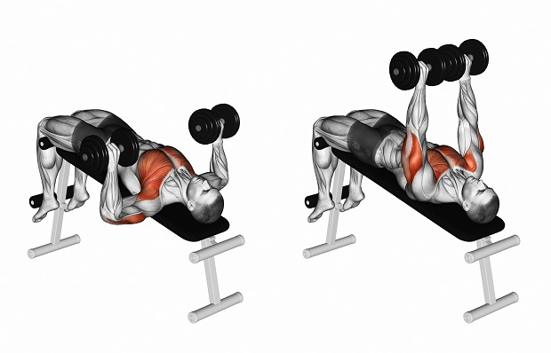

Жим гантелей лежа

Красивая накачанная грудь – важный элемент в фигуре любого атлета, будь то мужчина или женщина. Существует множество эффективных способов проработать эту целевую группу мышц. Жим гантелей лежа на скамье- как раз один из таких доступных способов. В статье мы подробно расскажем, как правильно делать жим гантелей лежа, рассмотрим разные вариации упражнения (жим гантелей лежа на горизонтальной и наклонной скамье под углом 30-45 С), и подскажем ориентировочные программы и комплексы для кроссфита с использованием этого упражнения.
Польза от упражнения
Жим гантелей лежа вверх – одно из базовых упражнений в кроссфите. Давайте же детально разберёмся, какие мышцы работают при жиме гантелей лежа и какая от него польза. Самый большой плюс упражнения в том, что благодаря ему можно эффективно нагрузить большие грудные мышцы. Активно принимает участие в работе также трицепс и передний пучок дельт. Бицепсы, а также широчайшие мышцы спины играют роль стабилизаторов во время выполнения упражнения.
Во время движения атлет выполняет толчковое движение спортивных снарядов вверх. Польза от жима гантелей лежа для спортсмена заключается в том, что это упражнение позволяет ему хорошо проработать грудную зону тела, а также увеличить силовые показатели в других упражнениях. Данное упражнение отлично подойдет новичкам и станет хорошей базой для прокачки груди. Работая под присмотром тренера, начинающий атлет сможет быстро сделать первые шаги к хорошей форме. С этого упражнения очень эффективно начинать свой тренировочный день.
Профессионалам нужно выполнять жим гантелей лежа, чтобы увеличить силовые показатели в стандартном упражнении со штангой. Также опытным спортсменам нужно регулярно менять программу занятий. Это упражнение поможет разнообразить процесс прокачки грудных мышц. Вы можете заниматься в тренажерном зале при помощи метода суперсета. Комбинируйте жимовое упражнение с разведением гантелей, а также с отжиманиями с широкой расстановкой рук. Выполняйте несколько подходов в различных упражнениях без отдыха.
Жим гантелей лежа на горизонтальной скамье подойдет и женщинам. Девушки должны работать с комфортным для себя весом. Перед работой с железом, вы можете выработать базовою силу при помощи обычных отжиманий.
Правильная техника выполнения французского жима
Большинство начинающих спортсменов, которые впервые приходят в тренажерный зал, допускают огромное количество ошибок. В том случае, если в мире тяжелой атлетики вы полнейший новичок — обязательно воспользуйтесь услугами опытного наставника, ведь техника выполнения жима гантелей лежа не так проста, как кажется со стороны. Тренер поможет составить программу занятий, а также проконсультирует вас в вопросах питания. Уже на первой тренировке вы можете узнать о технических сложностях жима гантелей лежа и правилах выполнения упражнения.
Перед началом упражнения вы должны выбрать гантели подходящего веса. Сначала работайте с небольшой нагрузкой. Первое время атлету нужно работать над улучшением техники. После того, как вы сможете выполнять все элементы правильно, возьмите более тяжелые спортивные снаряды.
Техника выполнения жима гантелей лежа такова:
- Поднимите гантели с пола на бедра. Рывковым движением вы должны лечь на скамью и занять исходное положение.
- Разместитесь удобно. Немного прогните спину в пояснице. Голова и плечи должны быть плотно прижатыми к поверхности. Взгляд направьте вверх. Также важно, чтобы ноги плотно стояли на полу на полной стопе. Расставьте их на несколько большее расстояние, чем ширина ваших плеч.
- Плотно зафиксируйте снаряд в руках. Локти должны быть выпрямлены или чуть-чуть согнуты.
- Начинайте синхронно опускать гантели на вдохе, а во время выдоха выжимайте их вверх.
- В момент движения крепко фиксируйте положение ваших запястий.
- Жим гантелей лежа на горизонтальной скамье должен выполняться по такой же амплитуде, с какой проделывается обычная работа со штангой.
- После того, как вы закончили выполнять упражнение, аккуратно положите гантели на пол. В том случае, если вы занимаетесь в тренажерном зале в паре с товарищем, он может забрать у вас из рук спортивные снаряды.
Чтобы более качественно проработать разные отделы грудных мышц, опытные культуристы используют различные вариации выполнения одного и того же упражнения. Вы можете выполнять жим гантелей лежа, находясь в разных положениях и разными способами: